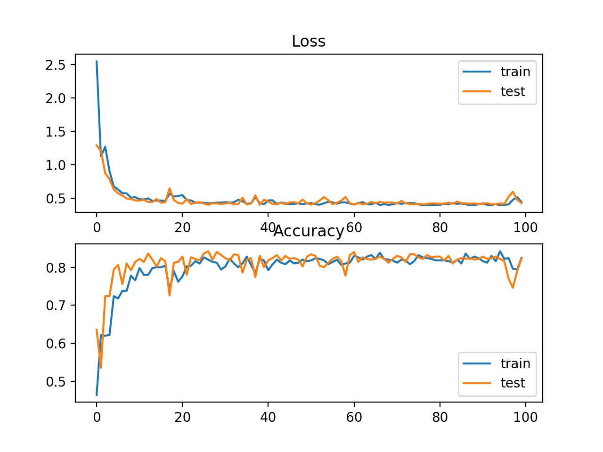

Point Cloud generated from 2D image. First, MiDasv2.1 depth map used to extract z-depth. Then Open3D to render the RGBD mask onto depth map.

Some basic computer vision tasks including: color segmentation, edge detection, contour detection, thresholding, etc.
Sliding scale Canny used above. OpenCV was heavily used in these projects as well as other projects.

Selfie segmentation with Holistic Pose Estimation (thank you MediaPipe) produced impressive results at an extremely high frame rate.

From MiDasv2.1 depth map to AI 3D Inpainting gives incredible results.

Google's MediaPipe used to extract human pose landmarks. By far the most fun framework, yet has limitations. Tensorflow Movenet was used in other projects for multiple human landmark detections and estimations.

Stereovision camera used to track object's 3-dimensional position over (T) time.
Foundation of understanding data structures and statistical analysis. SAS and Python primarily used for exploration and Learning

Ranging from basic to advance, python and java used for various tasks mostly related to tabular data.